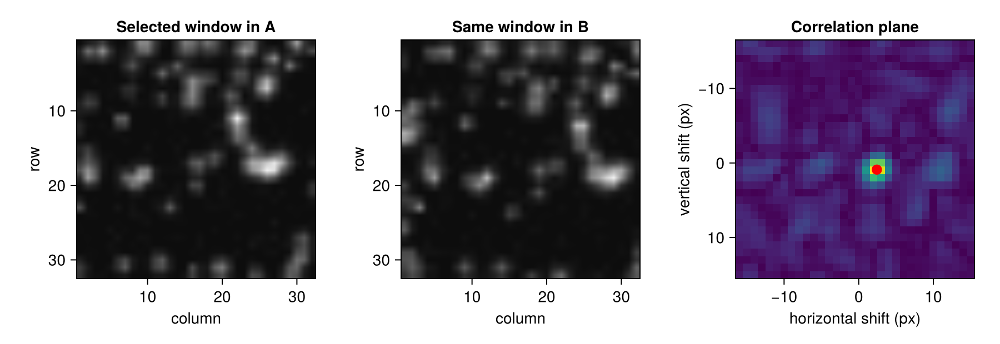

A first vector field
This tutorial measures the displacement field of a synthetic vortex from one particle-image pair. It shows how a single vector is obtained from a correlation peak, how window size trades vector spacing against particle count, how a stationary reflection biases the field and is masked, and how pixel displacements convert to velocity.
The blocks run in order and need Hammerhead and CairoMakie; the images are generated in the first block.
Measure a displacement field
The pair is 256 × 256 px with a smooth rotating flow; the largest displacement between exposures is about 3 px.
using Hammerhead
using Hammerhead.SyntheticData
using Random
using CairoMakie
using Statistics: median
function flow(x, y, z, t)
dx, dy = x - 128.0, y - 128.0
rate = 3.0 / sqrt(dx^2 + dy^2 + 30.0^2)
return (-rate * dy, rate * dx, 0.0)
end
imgA, imgB, _, _ = generate_synthetic_piv_pair(
flow, (256, 256), 1.0;
particle_density = 0.05, background_noise = 0.03,
z_range = (-1.0, 1.0), rng = MersenneTwister(42),
)The schedule starts with large windows and refines to smaller ones; each pass deforms the images with the previous field before correlating. The final 16 px window is repeated, which also allows an uncertainty estimate.
passes = multipass_parameters([64, 32, 16, 16];
padding = true, apodization = :gauss, uncertainty = true)
fine = run_piv(imgA, imgB, passes)
let
fig = Figure(size = (960, 330))
for (k, img, title) in ((1, imgA, "First exposure"),
(2, imgB, "Next exposure"),
(3, imgA, "Measured motion"))
ax = Axis(fig[1, k]; title, yreversed = true, aspect = DataAspect(),
xlabel = "x (px)", ylabel = "y (px)")
image!(ax, (0.5, 256.5), (0.5, 256.5), img'; colormap = :grays)
k == 3 && plot_vector_field!(ax, fine; stride = 3,
color = :cyan, lengthscale = 3)
end
fig
end
Above the center the motion is mostly rightward, below it mostly leftward; arrow lengths are enlarged threefold. fine.u is the horizontal displacement (positive right) and fine.v the vertical displacement (positive down), both in pixels between the two exposures.
How one vector is measured
Each vector comes from the particle pattern in one interrogation window. The window in the first image is compared with the second image at every candidate shift; the best alignment is a peak in the correlation plane.
A single 32 px pass with keep_correlation_planes = true retains the plane of every window.
basic = run_piv(imgA, imgB,
PIVParameters(window_size = 32, overlap = 16,
keep_correlation_planes = true))
i, j = 5, 9
row0 = round(Int, basic.y[i] - 15.5)
col0 = round(Int, basic.x[j] - 15.5)
rows, cols = row0:(row0 + 31), col0:(col0 + 31)
windowA, windowB = @view(imgA[rows, cols]), @view(imgB[rows, cols])
probe = correlate(CrossCorrelator{Float64}((32, 32)), windowA, windowB)
plane = basic.correlation_planes[i, j]
zero_lag = size(plane) .÷ 2 .+ 1
let
fig = Figure(size = (900, 310))
for (k, win, title) in ((1, windowA, "Selected window in A"),
(2, windowB, "Same window in B"))
ax = Axis(fig[1, k]; title, yreversed = true, aspect = DataAspect(),
xlabel = "column", ylabel = "row")
image!(ax, (0.5, 32.5), (0.5, 32.5), win'; colormap = :grays)
end
ax = Axis(fig[1, 3]; title = "Correlation plane",
xlabel = "horizontal shift (px)", ylabel = "vertical shift (px)",
yreversed = true, aspect = DataAspect())
heatmap!(ax, (1:size(plane, 2)) .- zero_lag[2],
(1:size(plane, 1)) .- zero_lag[1], plane'; colormap = :viridis)
scatter!(ax, [probe.du], [probe.dv]; color = :red, markersize = 13)
fig
end
The red point is the estimated shift. A fit around the highest sampled value places the peak between pixels, so displacements are fractional.
(window_center = (basic.x[j], basic.y[i]),
displacement_px = (basic.u[i, j], basic.v[i, j]),
integer_peak = probe.peakloc,
subpixel_peak = probe.refined_peakloc)(window_center = (144.5, 80.5), displacement_px = (2.4262797616740244, 0.8946721973570142), integer_peak = (18, 19), subpixel_peak = (17.894672197357014, 19.426279761674024))A window across the vortex center contains several motion directions, and its correlation peak is broader or split. Retaining every plane is useful for this kind of inspection but costs memory on large recordings.
Window size and vector spacing
The single-pass field and the refined field share colors and arrow scaling; the backgrounds show displacement magnitude in pixels.
let
fig = Figure(size = (820, 370))
for (k, r, title) in ((1, basic, "32 px windows, one pass"),
(2, fine, "16 px windows, multiple passes"))
ax = Axis(fig[1, k]; title, yreversed = true, aspect = DataAspect(),
xlabel = "x (px)", ylabel = "y (px)")
heatmap!(ax, r.x, r.y, hypot.(r.u, r.v)';
colorrange = (0, 4), colormap = :viridis)
plot_vector_field!(ax, r; stride = k == 1 ? 1 : 2, lengthscale = 2)
end
fig
end
Smaller windows resolve more variation near the center but contain fewer particles per measurement. Overlap places vectors closer together without shrinking the window each vector averages over, so it adds samples, not resolution.
Masking a stationary reflection
A bright rectangle fixed in both images hides the moving particles and produces a zero-shift correlation peak. The pair is processed once without a mask and once with the reflection excluded.
imgA_refl, imgB_refl = copy(imgA), copy(imgB)
for img in (imgA_refl, imgB_refl)
img[97:144, 41:104] .= 1.0
end
with_reflection = run_piv(imgA_refl, imgB_refl, passes)
mask = falses(size(imgA))
mask[97:144, 41:104] .= true # true means excluded
masked = run_piv(imgA_refl, imgB_refl, passes; mask)
let
fig = Figure(size = (820, 370))
for (k, r, title) in ((1, with_reflection, "Reflection, no mask"),
(2, masked, "Known reflection excluded"))
ax = Axis(fig[1, k]; title, yreversed = true, aspect = DataAspect(),
xlabel = "x (px)", ylabel = "y (px)")
image!(ax, (0.5, 256.5), (0.5, 256.5), imgA_refl'; colormap = :grays)
plot_vector_field!(ax, r; stride = 2, color = :cyan,
replaced_color = :orangered, lengthscale = 2)
end
fig
end
Orange arrows carry an outlier flag. Their values may be replacements, which are neighborhood estimates rather than particle measurements. In the masked result, windows with enough excluded pixels have no vector. Summaries of measured displacement should exclude both flags.
accepted = .!(masked.mask .| masked.outliers) .&
isfinite.(masked.u) .& isfinite.(masked.v)
(accepted_vectors = count(accepted),
excluded_windows = count(masked.mask),
flagged_vectors = count(masked.outliers))(accepted_vectors = 900, excluded_windows = 59, flagged_vectors = 2)A mask that only partly covers the reflection can still leave plausible-looking vectors in partly covered windows: the appearance of a field does not establish that each vector is a sound measurement.
Converting to velocity
With a calibration of 0.02 mm per pixel and an exposure delay of 0.001 s, a two-pixel displacement corresponds to 40 mm/s. These values are illustrative; a real setup uses its measured calibration and delay.
scale = PhysicalScale(pixel_size = 0.02, dt = 0.001,
length_unit = "mm", time_unit = "s")
velocity = physical(with_scale(fine, scale))
fine_i = argmin(abs.(fine.y .- basic.y[i]))
fine_j = argmin(abs.(fine.x .- basic.x[j]))
(displacement_px = fine.u[fine_i, fine_j],
velocity_mm_per_s = velocity.u[fine_i, fine_j],
position_mm = velocity.x[fine_j])(displacement_px = 2.489929147662054, velocity_mm_per_s = 49.79858295324108, position_mm = 2.89)fine still holds pixels. velocity holds positions in mm and components in mm/s. The same conversion scales the uncertainty estimate.
valid = .!(fine.mask .| fine.outliers)
sigma_u = filter(isfinite, fine.uncertainty_u[valid])
median(sigma_u)0.017531513650488745This is the median random displacement uncertainty in pixels (Wieneke, 2015); it does not include calibration error. Its scope is described in Uncertainty quantification.
A real wind-tunnel recording applies the same steps to measured images, where the true motion is unknown and the image content varies across the field.
This page was generated using Literate.jl.